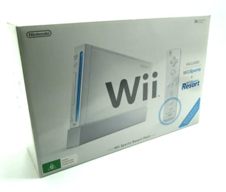
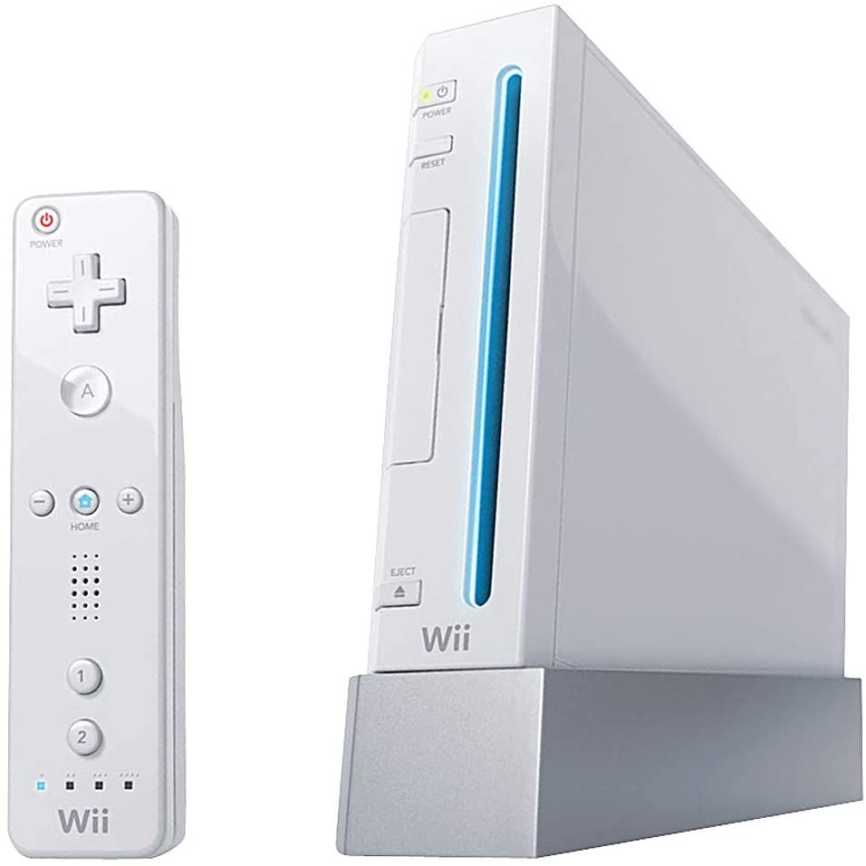
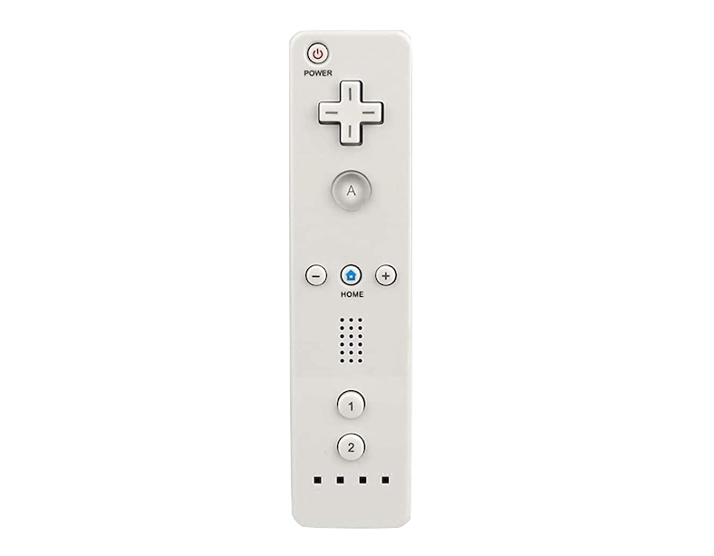
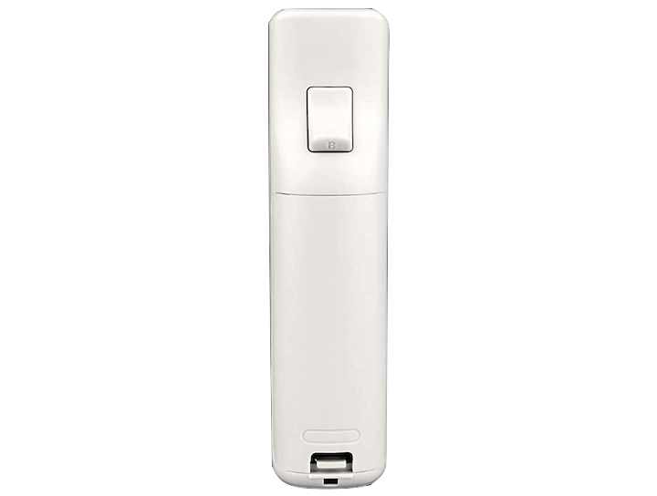

The Wii remote
The wii remote was the oddly shaped controller that came with the nintendo wii. This contoler was shaped like a remote to appeal like a family console.
 The wii remote had motion controllers that used infered lights to detect the motion. This caused the console to be a big success in all catergorys.
 